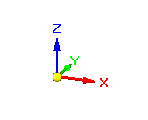
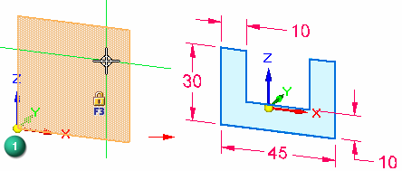
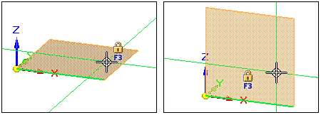
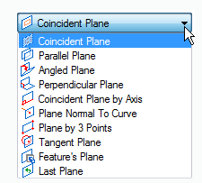
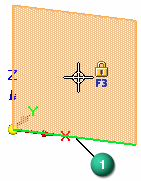
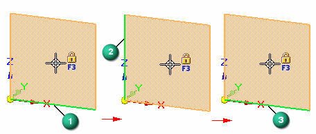
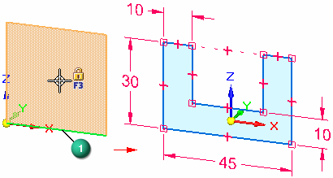
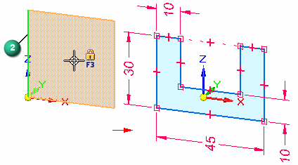

Working with sketch planes
Many commands in Solid Edge use a 2D plane for placement of geometry in 3D model space. For example, when drawing 2D sketch elements, such as lines, arcs, and circles, the 2D elements reside on a coordinate system plane, reference plane, or planar face on the model. This 2D plane is called the sketch plane. Only one sketch plane is available at a time.
Choosing a sketch plane
When starting a new part, you would typically draw a sketch on one of the three principal planes of the base coordinate system. For example, you can draw the first sketch for a new part on the XZ principal plane of the base coordinate system (1).


You can see which plane of the coordinate system you will draw on because the plane under the cursor highlights, and the alignment lines, which extend out from the cursor, adjust dynamically depending on what plane your cursor is over.

Sketch plane locking
In an ordered sketch, you lock to a sketch plane by:
-
Selecting the type of plane from the Create-From Options list on the command bar.

-
Following the prompts to create the type of plane.
In a synchronous sketch, after you select a drawing command, hover over a coordinate system plane, model face, or reference plane, and when it highlights you can lock to that sketch plane using any of these techniques:
-
Pressing F3.
-
Clicking the lock icon.
-
Clicking the highlighted plane or face.
There are two methods for locking a synchronous sketch plane: automatic and manual. For more information, see Synchronous sketch plane locking.
Sketch plane X-axis orientation
When you highlight a coordinate system plane, planar face, or reference plane on which you want to draw a sketch, a default X-axis orientation is displayed automatically (1).

While you are defining the sketch plane and the default X-axis is highlighted (1), you can use the shortcut keys to change the X-axis orientation. For example, you can press the N key to select the next linear edge (2), or the B key to select the previous linear edge (3).

The valid shortcut keys for defining the X-axis orientation of a sketch plane are displayed in PromptBar when you are defining the sketch plane.
The X-axis orientation (1) (2) of a sketch controls the dimension text alignment for dimensions, and determines the horizontal and vertical axes for horizontal and vertical relationships.

